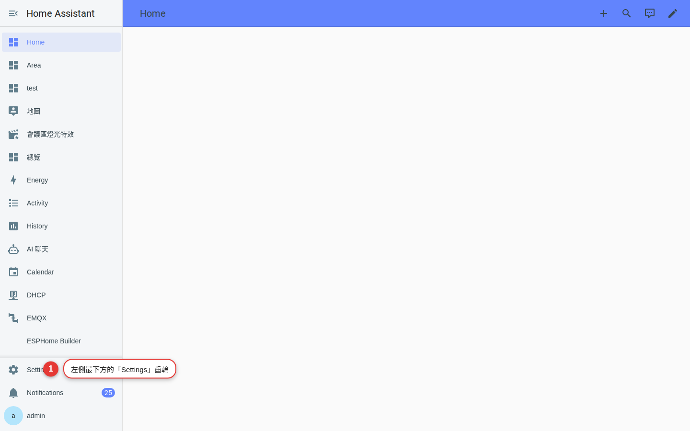
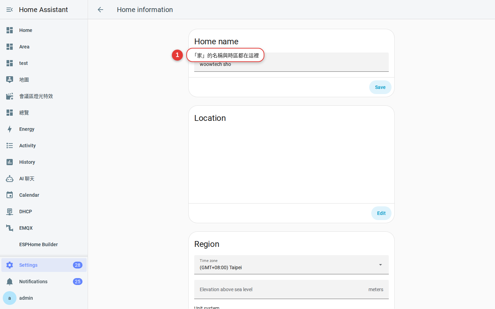
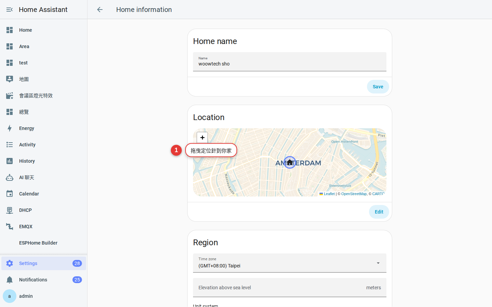
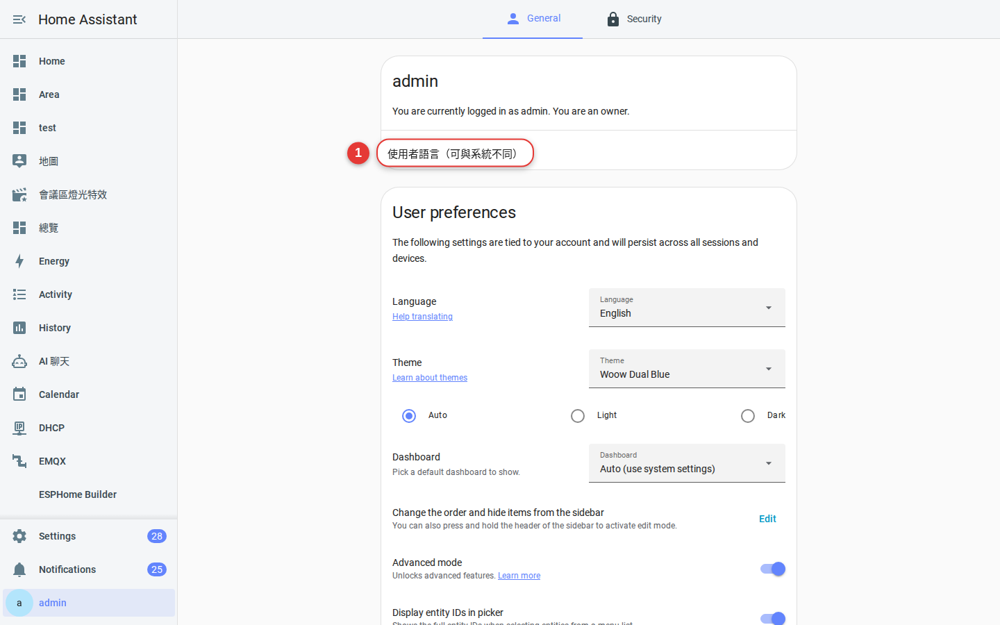

第 2 章
系統設定
把時區、語言、單位、地理位置一次調對。這些是 HA 判斷「日出日落」「颱風接近」「開冷氣要幾度」的根據，設錯後面全錯。
為什麼要先設定這裡
HA 的很多自動化仰賴「地理位置」和「時區」：
- 「日落後 30 分鐘開玄關燈」— 需要知道你在台灣還是加州。
- 「颱風靠近時關窗」— 需要正確的座標抓氣象。
- 「27°C 開冷氣」— 攝氏還是華氏？單位錯就會判斷錯。
這一章要做的事不多，但影響後面每一章。
進入設定
左側選單點「設定」（齒輪圖示），這是 HA 的所有系統設定入口。

動手設定
-
設定 → 系統 → 一般
在設定頁點「系統」，再點「一般」。這頁就是本章的主戰場。

圖 2-2系統一般設定頁，有名稱、時區、單位、貨幣等欄位。 -
設定「家」的名稱與地理位置
名稱：例如「王家」「陳府」— 這個名字會顯示在手機通知標題。
位置：直接在地圖上把針拖到你家門口。這是「在家／不在家」判斷的原點。

圖 2-3地圖上拖曳定位針。 -
時區與貨幣
時區：台灣選
Asia/Taipei。貨幣：TWD（新台幣）。這兩個影響時間戳與能源儀表板。 -
單位系統
單位系統：選「公制」。溫度：攝氏。降雨：mm。風速：m/s 或 km/h。
-
儲存
右下角按「儲存」。改完之後有些設定要重整頁面才會生效。
提示：如果之後感覺日出日落時間怪怪的、通知時間不對，八成是這頁少了某個欄位。
個人偏好（自己的頭像、語言、佈景）
剛才是「整個家」的設定，這裡是「你自己」的設定：右下角頭像 → 「使用者設定」。
-
語言
選「繁體中文」，整個介面立刻中文化。

圖 2-4使用者設定的「語言」欄位。 -
時間格式與初始頁面
時間格式：24 小時或 12 小時看習慣。啟動頁面：你希望登入後看到哪一頁（預設是「總覽」）。
-
佈景（Theme）
下拉選單有幾個內建佈景，包括「Backend-selected」（跟隨系統深淺色）、「Default light/dark」等。
常見問題
改了時區後，過去的圖表時間會不會跑掉？
會。歷史資料以 UTC 儲存，顯示時再套時區，所以改時區後看到的圖會平移。這是正確行為，不用擔心。
「家」的位置一定要真實嗎？
最好是真實座標，因為日出日落、氣象、地震通知都靠它。如果你在乎隱私，可以設在方圓 1 公里內的一個地標點。
不同使用者能各自選語言嗎？
可以。系統設定的語言只是「預設值」，每位使用者的「使用者設定」可以自己選。